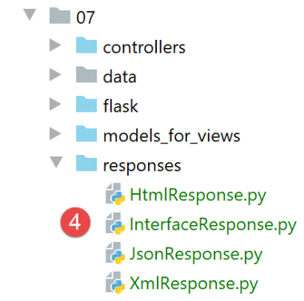
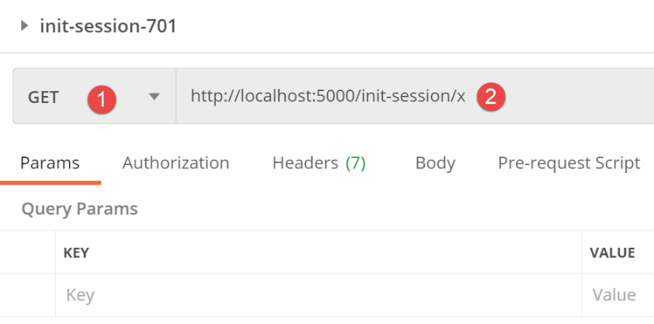
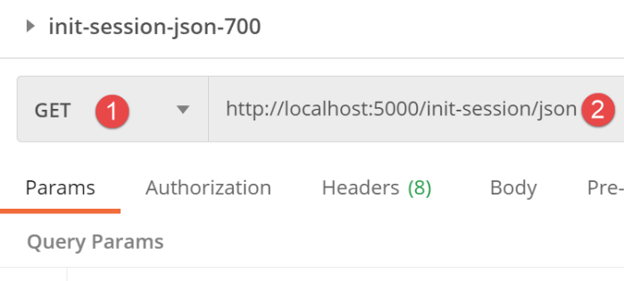
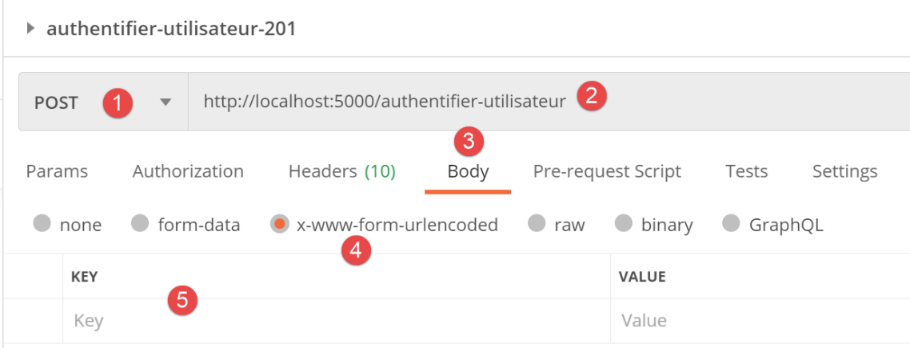
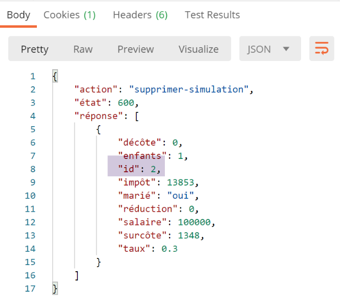
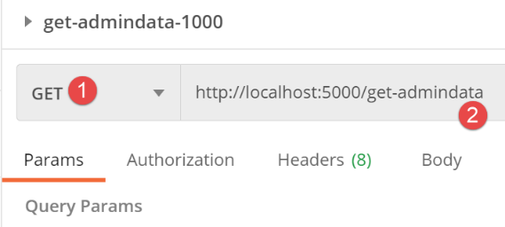
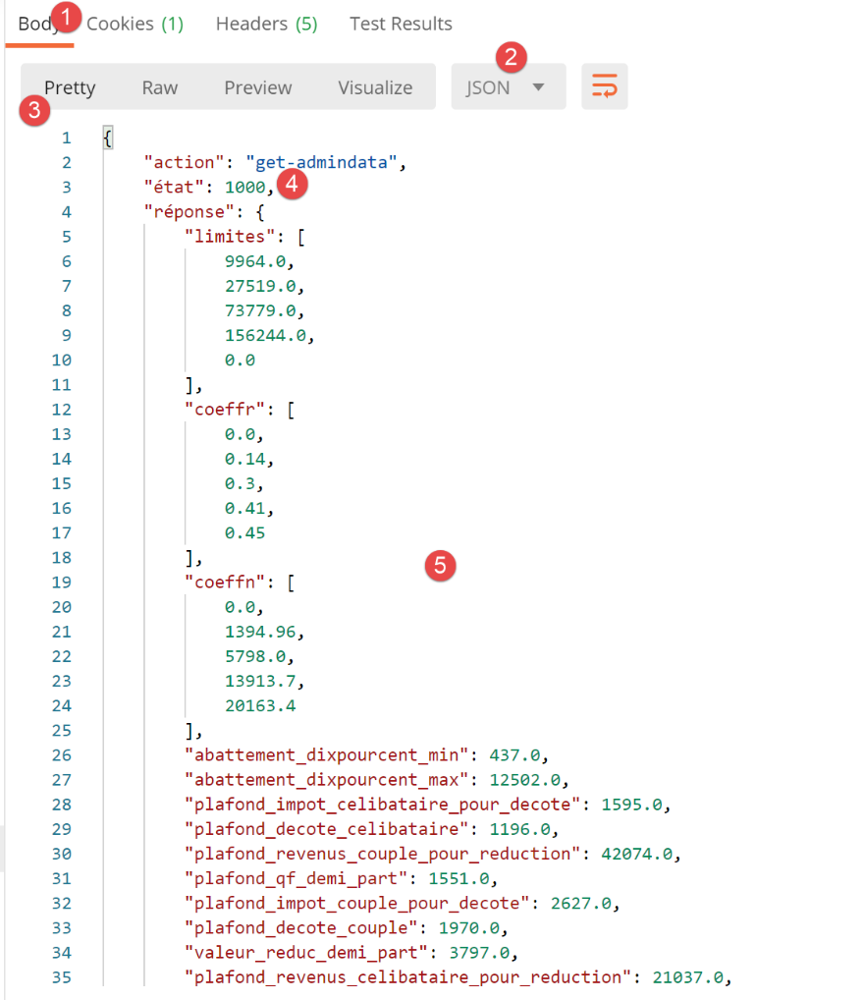
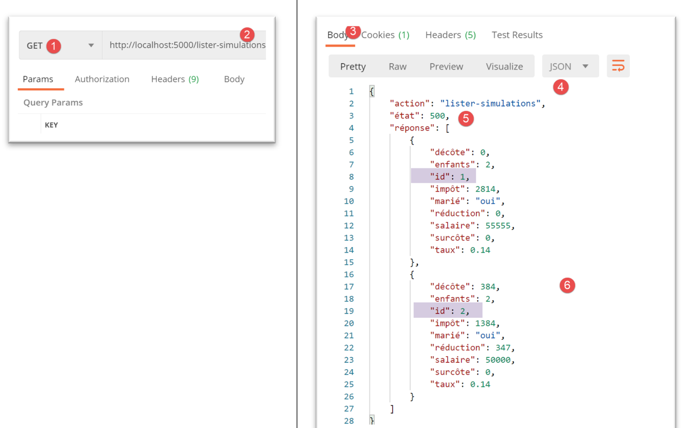

30. Exercice d’application : version 12
Nous allons dans ce chapitre écrire une application web respectant l’architecture MVC (Modèle-Vue-Contrôleur). L’application pourra délivrer ses réponses dans trois formats : jSON, XML, HTML. Il y a un saut de complexité entre ce que nous allons faire maintenant et ce qui a été fait précédemment. Nous allons réutiliser la plupart des concepts vus jusqu’à maintenant et allons détailler toutes les étapes menant à l’application finale.
30.1. Architecture MVC
Nous allons implémenter le modèle d'architecture dit MVC (Modèle – Vue – Contrôleur) de la façon suivante :

Le traitement d'une demande d'un client se déroulera de la façon suivante :
- 1 - demande
Les URL demandées seront de la forme http://machine:port/action/param1/param2/… Le [Contrôleur principal] utilisera un fichier de configuration pour " router " la demande vers le bon contrôleur. Pour cela, il utilisera le champ [action] de l'URL. Le reste de l'URL [param1/param2/…] est formé de paramètres facultatifs qui seront transmis à l'action. Le C de MVC est ici la chaîne [Contrôleur principal, Contrôleur / Action]. Si aucun contrôleur ne peut traiter l'action demandée, le serveur web répondra que l'URL demandée n'a pas été trouvée.
-
2 - traitement
-
l'action choisie [2a] peut exploiter les paramètres parami que le [Contrôleur principal] lui a transmis. Ceux-ci pourront provenir de deux sources :
-
du chemin [/param1/param2/…] de l'URL,
-
de paramètres postés dans le corps de la requête du client ;
-
dans le traitement de la demande de l'utilisateur, l'action peut avoir besoin de la couche [métier] [2b]. Une fois la demande du client traitée, celle-ci peut appeler diverses réponses. Un exemple classique est :
-
une réponse d'erreur si la demande n'a pu être traitée correctement ;
-
une réponse de confirmation sinon ;
-
le [Contrôleur / Action] rendra sa réponse [2c] au contrôleur principal ainsi qu’un code d’état. Ces codes d’état représenteront de façon unique l’état dans lequel se trouve l’application. Ce sera soit un code de réussite, soit un code d’erreur ;
-
3 - réponse
-
selon que le client a demandé une réponse jSON, XML ou HTML, le [Contrôleur principal] instanciera [3a] le type de réponse appropriée et demandera à celle-ci d’envoyer la réponse au client. Le [Contrôleur principal] lui transmettra et la réponse et le code d’état fournis par le [Contrôleur / Action] qui a été exécuté ;
- si la réponse souhaitée est de type jSON ou XML, la réponse sélectionnée mettra en forme la réponse du [Contrôleur / Action] qu’on lui a donnée et l’enverra [3c]. Le client capable d’exploiter cette réponse peut être un script console Python ou un script Javascript logé dans une page HTML ;
- si la réponse souhaitée est de type HTML, la réponse sélectionnée sélectionnera [3b] une des vues HTML [Vuei] à l’aide du code d’état qu’on lui a donné. C’est le V de MVC. A un code d’état correspond une unique vue. Cette vue V va afficher la réponse du [Contrôleur / Action] qui a été exécuté. Elle habille avec du HTML, CSS, Javascript les données de cette réponse. On appelle ces données le modèle de la vue. C'est le M de MVC. Le client est alors le plus souvent un navigateur ;
Maintenant, précisons le lien entre architecture web MVC et architecture en couches. Selon la définition qu'on donne au modèle, ces deux concepts sont liés ou non. Prenons une application web MVC à une couche :

Ci-dessus, les [Contrôleur / Action] intègrent chacun une partie des couches [métier] et [dao]. Dans la couche [web] on a bien une architecture MVC mais l’ensemble de l’application n’a pas une architecture en couches. Ici il n’y a qu’une couche, la couche web, qui fait tout.
Maintenant, considérons une architecture web multicouche :

La couche [web] peut être implémentée sans suivre le modèle MVC. On a bien alors une architecture multicouche mais la couche web n'implémente pas le modèle MVC.
Par exemple, dans le monde .NET la couche [web] ci-dessus peut être implémentée avec ASP.NET MVC et on a alors une architecture en couches avec une couche [web] de type MVC. Ceci fait, on peut remplacer cette couche ASP.NET MVC par une couche ASP.NET classique (WebForms) tout en gardant le reste (métier, DAO, Pilote) à l'identique. On a alors une architecture en couches avec une couche [web] qui n'est plus de type MVC.
Dans MVC, nous avons dit que le modèle M était celui de la vue V, c.a.d. l'ensemble des données affichées par la vue V. Une autre définition du modèle M de MVC est donnée :

Beaucoup d'auteurs considèrent que ce qui est à droite de la couche [web] forme le modèle M du MVC. Pour éviter les ambigüités on peut parler :
- du modèle du domaine lorsqu'on désigne tout ce qui est à droite de la couche [web] ;
- du modèle de la vue lorsqu'on désigne les données affichées par une vue V ;
Dans ce qui suit, lorsque nous parlerons de modèle, il s’agita toujours du modèle de la vue.
30.2. Architecture de l’application client / serveur
L’application web aura l’architecture suivante :

-
en [1] le serveur web aura deux types de clients :
-
en [2], un client console qui échangera du jSON et du XML avec le serveur ;
-
en [3], un navigateur qui recevra du HTML du serveur et l’affichera ;
-
le serveur web [1] conserve les couches [métier] et [dao] des versions précédentes ;
- le client web [2] évoluera pour tenir compte des nouvelles URL de service de l’application web ;
- l’application HTML afichée par le navigateur est à écrire complètement ;
Nous allons développer l’application en plusieurs temps :
- nous allons développer la version jSON du serveur. Nous testerons les URL de service du serveur les unes après les autres avec un client Postman. Cette méthode nous permet de construire l’ossature du seveur web sans nous préoccuper des vues (=HTML) de l’application ;
- après avoir testé le serveur jSON avec Postman, nous le testerons avec un client console ;
- puis nous passerons à la version XML du serveur. Nous avons vu que le passage du jSON au XML était trivial ;
- enfin nous passerons à la version HTML du serveur. Nous construirons une architecture MVC et définirons les vues à afficher. L’application HTML sera testée à la fois avec le client Postman et un navigateur classique ;
30.3. L’arborescence du code du serveur
- en [1 : le serveur web dans sa globalité ;
 * en [2] : nous ignorerons pour l’instant les dossiers [static, templates, tests_views] qui concernent la version HTML du serveur. En-dehors de ce dossier nous trouverons le script principal [main] et sa configuration ;
* en [3], les contrôleurs du serveur web. Ce seront des instances de classes ;
* en [2] : nous ignorerons pour l’instant les dossiers [static, templates, tests_views] qui concernent la version HTML du serveur. En-dehors de ce dossier nous trouverons le script principal [main] et sa configuration ;
* en [3], les contrôleurs du serveur web. Ce seront des instances de classes ;
 |  |
- en [4], la réponse HTTP du serveur sera gérée par des classes ;
- en [5], nous conservons le fichier de logs des serveurs précédents ;
Lorsque nous construirons la version HTML du serveur, d’autres dossiers interviendront :
 |  |
- en [6], les éléments statiques de l’application HTML ;
- en [7], les templates de l’application HTML décomposés en vues [9] et en fragments de vue [8] ;
- en [9], les classes implémentant les modèles des vues ;
30.4. Les URL de service de l’application
Pour construire le serveur web, nous allons procéder de la façon suivante :
- à partir des vues de l’application HTML, nous allons définir les actions que doit implémenter l’application web. Nous allons ici utiliser les vues réelles mais ce pourrait être simplement des vues sur papier ;
- à partir de ces actions, nous allons définir les URL de service de l’application HTML ;
- nous allons implémenter ces URL de service avec un serveur délivrant du jSON. Cela permet de définir l’ossature du serveur web sans se préoccuper des pages HTML à délivrer. Nous testerons ces URL de service avec Postman ;
- nous testerons ensuite notre serveur jSON avec un client console ;
- une fois que le serveur jSON aura été validé, nous passerons à l’ériture de l’application HTML ;
La 1ère vue sera la vue d’authentification :
- l’action qui mène à cette 1ère vue s’appellera [init-session] [1] ;
 * le clic sur le bouton [Valider] va déclencher l’action [authentifier-utilisateur] avec deux paramètres postés [2-3] ;
* le clic sur le bouton [Valider] va déclencher l’action [authentifier-utilisateur] avec deux paramètres postés [2-3] ;
La vue du calcul de l’impôt :

- en [1], l’action [authentifier-utilisateur] qui a amené à cette vue ;
- en [2], le clic sur le bouton [Valider] déclenche l’exécution de l’action [calculer-impot] avec trois paramètres postés [2-5] ;
- le clic sur le lien [6] déclenche l’action [lister-simulations] sans paramètres ;
- le clic sur le lien [7] déclenche l’action [fin-session] sans paramètres ;
La 3ième vue est celle des simulations faites par l’utilisateur authentifié :

- en [3], l’action [lister-simulations] qui a amené à cette vue ;
- en [2], un clic sur le lien [Supprimer] déclenche l’action [supprimer-simulation] avec un paramètre, le n° de la simulation à supprimer dans la liste ;
- un clic sur le lien [3] déclenche l’action [afficher-calcul-impot] sans paramètres qui réaffiche la vue du calcul de l’impôt ;
- un clic sur le lien [4] déclenche l’action [fin-session] sans paramètres ;
Avec ces premières informations, nous pouvons définir les différentes URL de service du serveur :
Action | Rôle | Contexte d’exécution |
/init-session | Sert à fixer le type (json, xml, html) des réponses souhaitées | Requête GET Peut être émise à tout moment |
/authentifier-utilisateur | Autorise ou non un utilisateur à se connecter | Requête POST. La requête doit avoir deux paramètres postés [user, password] Ne peut être émise que si le type de la session (json, xml, html) est connu |
/calculer-impot | Fait une simulation de calcul d’impôt | Requête POST. La requête doit avoir trois paramètres postés [marié, enfants, salaire] Ne peut être émise que si le type de la session (json, xml, html) est connu et l’utilisateur authentifié |
/lister-simulations | Demande à voir la liste des simulations opérées depuis le début de la session | Requête GET. Ne peut être émise que si le type de la session (json, xml, html) est connu et l’utilisateur authentifié |
/supprimer-simulation/numéro | Supprime une simulation de la liste des simulations | Requête GET. Ne peut être émise que si le type de la session (json, xml, html) est connu et l’utilisateur authentifié |
/afficher-calcul-impot | Affiche la page HTML du calul de l’impôt | Requête GET. Ne peut être émise que si le type de la session (json, xml, html) est connu et l’utilisateur authentifié |
/fin-session | Termine la session de simulations. | Techniquement l’ancienne session web est supprimée et une nouvelle session est créée Ne peut être émise que si le type de la session (json, xml, html) est connu et l’utilisateur authentifié |
Ces différentes URL de service seront utilisées aussi bien pour le serveur HTML que pour les serveurs jSON ou XML. Deux URL ne seront utilisées que pour ces deux derniers serveurs : ce sont les URL de la version précédente du client / serveur web que nous reprenons ici :
Action | Rôle | Contexte d’exécution |
/get-admindata | Rend les données fiscales permettant le calcul de l’impôt | Requête GET. N’est utilisée que si le type de la session est json ou xml. L’utilisateur doit être authentifié |
/calculer-impots | Fait le calcul de l’impôt d’une liste de contribuables postés en jSON | Requête GET. N’est utilisée que si le type de la session est json ou xml. L’utilisateur doit être authentifié |
Tous les contrôleurs associés à ces actions procèderont de la même façon :
-
ils vérifieront leurs paramètres. Ceux-ci sont trouvés dans l’objet :
-
[request.path] pour les paramètres présents dans l’URL sous la forme [/action/param1/param2/…] ;
- dans l’objet [request.form] pour ceux qui sont transmis en [x-www-form-urlencoded] dans le corps de la requête ;
-
dans l’objet [request.data] pour ceux qui sont transmis en jSON dans le corps de la requête ;
-
un contrôleur s’apparente à une fonction ou méthode qui vérifie la validité de ses paramètres. Pour le contrôleur c’est cependant un peu plus compliqué :
-
les paramètres attendus peuvent être absents ;
- les paramètres récupérés par le contrôleur sont des chaînes de caractères. Si le paramètre attendu est un nombre, alors le contrôleur doit vérifier que la chaîne de caractères du paramètre est bien celle d’un nombre ;
- une fois vérifié, que les paramètres attendus sont présents et syntaxiquement corrects, il faut vérifier qu’ils sont valides dans le contexte d’exécution du moment. Ce contexte est présent dans la session. L’exemple de l’authentification est un exemple de contexte d’exécution. Certaines actions ne doivent être traitées qu’une fois le client authentifié. Généralement, une clé dans la session indique si cette authentification a eu lieu ou pas ;
- une fois, les vérifications précédentes faites, le contrôleur secondaire peut travailler. Ce travail de vérification des paramètres est très important. On ne peut pas accepter qu’un client nous envoie n’importe quoi à n’importe quel moment de la vie de l’application. On doit contrôler totalement la vie de celle-ci ;
-
une fois son travail fait, le contrôleur secondaire rend un dictionnaire avec les clés [action, état, réponse] au contrôleur principal qui l’a appelé :
-
[action] est l’action qui vient d’être exécutée ;
-
[état] est un nombre à trois chiffres qui indique le résultat du traitement de l’action :
-
[x00] signalera une réussite du traitement ;
-
[x01] signalera un échec du traitement ;
-
[réponse] est le dictionnaire des résultats sous la forme {‘réponse’:objet}. L’objet aura des structures différentes selon l’action traitée ;
Nous allons maintenant passer en revue les différents contrôleurs ou ce qui revient au même les différentes actions que ces contrôleurs traitent et qui rythment la vie de l’application web.
30.5. Configuration du serveur

La configuration de la base de données [config_database] ainsi que celle des couches du serveur [config_layers] sont identiques à celles des versions précédentes. Le fichier [config] voit apparaître de nouvelles informations :
- def configure(config: dict) -> dict:
- import os
- # étape 1 ------
- # dossier de ce fichier
- script_dir = os.path.dirname(os.path.abspath(__file__))
- # chemin racine
- root_dir = "C:/Data/st-2020/dev/python/cours-2020/python3-flask-2020"
- # dépendances
- absolute_dependencies = [
- ** **# dossiers du projet
- ** **# BaseEntity, MyException
- ** *f"{root_dir}/classes/02/entities"*,
- ** **# InterfaceImpôtsDao, InterfaceImpôtsMétier, InterfaceImpôtsUi
- ** *f"{root_dir}/impots/v04/interfaces"*,
- ** **# AbstractImpôtsdao, ImpôtsConsole, ImpôtsMétier
- ** *f"{root_dir}/impots/v04/services"*,
- ** **# ImpotsDaoWithAdminDataInDatabase
- ** *f"{root_dir}/impots/v05/services"*,
- ** **# AdminData, ImpôtsError, TaxPayer
- ** *f"{root_dir}/impots/v04/entities"*,
- ** **# Constantes, tranches
- ** *f"{root_dir}/impots/v05/entities"*,
- ** **# Logger, SendAdminMail
- ** *f"{root_dir}/impots/http-servers/02/utilities"*,
- ** *# scripts [config_database, config_layers]*
- script_dir,
- # contrôleurs
- f"{script_dir}/../controllers",
- # réponses HTTP
- f"{script_dir}/../responses",
- # modèles des vues
- f"{script_dir}/../models_for_views",
- ]
- # on fixe le syspath
- from myutils import set_syspath
- set_syspath(absolute_dependencies)
- # dépendances du serveur web
- # les contrôleurs
- from AfficherCalculImpotController import AfficherCalculImpotController
- from AuthentifierUtilisateurController import AuthentifierUtilisateurController
- from CalculerImpotController import CalculerImpotController
- from CalculerImpotsController import CalculerImpotsController
- from FinSessionController import FinSessionController
- from GetAdminDataController import GetAdminDataController
- from InitSessionController import InitSessionController
- from ListerSimulationsController import ListerSimulationsController
- from MainController import MainController
- from SupprimerSimulationController import SupprimerSimulationController
- # les réponses HTTP
- from HtmlResponse import HtmlResponse
- from JsonResponse import JsonResponse
- from XmlResponse import XmlResponse
- # les modèles des vues
- from ModelForAuthentificationView import ModelForAuthentificationView
- from ModelForCalculImpotView import ModelForCalculImpotView
- from ModelForErreursView import ModelForErreursView
- from ModelForListeSimulationsView import ModelForListeSimulationsView
- # étape 2 ------
- # configuration de l'application
- config.update({
- # utilisateurs autorisés à utiliser l'application
- "users": [
- ** {**
- ** *"login": "admin",*
- ** *"password": *"admin"
- ** }**
- ** ]**,
- # fichier de logs
- "logsFilename": f"{script_dir}/../data/logs/logs.txt",
- # config serveur SMTP
- "adminMail": {
- # serveur SMTP
- "smtp-server": "localhost",
- # port du serveur SMTP
- "smtp-port": "25",
- # administrateur
- "from": "guest@localhost.com",
- "to": "guest@localhost.com",
- # sujet du mail
- "subject": "plantage du serveur de calcul d'impôts",
- # tls à True si le serveur SMTP requiert une autorisation, à False sinon
- "tls": False
- },
- # durée pause thread en secondes
- "sleep_time": 0,
- # actions autorisées et leurs contrôleurs
- "controllers": {
- # initialisation d'une session de calcul
- "init-session": InitSessionController(),
- # authentification d'un utilisateur
- "authentifier-utilisateur": AuthentifierUtilisateurController(),
- # calcul de l'impôt en mode individuel
- "calculer-impot": CalculerImpotController(),
- # calcul de l'impôt en mode lots
- "calculer-impots": CalculerImpotsController(),
- # liste des simulations
- "lister-simulations": ListerSimulationsController(),
- # suppression d'une simulation
- "supprimer-simulation": SupprimerSimulationController(),
- # fin de la session de calcul
- "fin-session": FinSessionController(),
- # affichage de la vue de calcul de l'impôt
- "afficher-calcul-impot": AfficherCalculImpotController(),
- # obtention des données de l'administration fiscale
- "get-admindata": GetAdminDataController(),
- # main controller
- "main-controller": MainController()
- },
- # les différents types de réponse (json, xml, html)
- "responses": {
- "json": JsonResponse(),
- "html": HtmlResponse(),
- "xml": XmlResponse()
- },
- # les vues HTML et leurs modèles dépendent de l'état rendu par le contrôleur
- "views": [
- ** {**
- ** **# vue d'authentification
- ** *"états": [*
- ** **# /init-session réussite
- ** *700,*
- ** **# /authentifier-utilisateur échec
- ** **201
- ** ]**,
- "view_name": "views/vue-authentification.html",
- "model_for_view": ModelForAuthentificationView()
- },
- {
- # vue du calcul de l'impôt
- "états": [
- ** **# /authentifier-utilisateur réussite
- ** *200,*
- ** **# /calculer-impot réussite
- ** *300,*
- ** **# /calculer-impot échec
- ** *301,*
- ** **# /afficher-calcul-impot
- ** **800
- ** ]**,
- "view_name": "views/vue-calcul-impot.html",
- "model_for_view": ModelForCalculImpotView()
- },
- {
- # vue de la liste des simulations
- "états": [
- ** **# /lister-simulations
- ** *500,*
- ** **# /supprimer-simulation
- ** **600
- ** ]**,
- "view_name": "views/vue-liste-simulations.html",
- "model_for_view": ModelForListeSimulationsView()
- }
- ],
- # vue des erreurs inattendues
- "view-erreurs": {
- "view_name": "views/vue-erreurs.html",
- "model_for_view": ModelForErreursView()
- },
- # redirections
- "redirections": [
- ** {**
- ** *"états": [*
- ** *400, *# /fin-session réussi
- ** ]**,
- # redirection vers
- "to": "/init-session/html",
- }
- ],
- }
- )
- # étape 3 ------
- # configuration de la base de données
- import config_database
- config["database"] = config_database.configure(config)
- # étape 4 ------
- # instanciation des couches de l'application
- import config_layers
- config['layers'] = config_layers.configure(config)
- # on rend la configuration
-
return config
-
jusqu’à la ligne 41, on retrouve des choses classiques ;
-
lignes 43-66 : arrivé à la ligne 43, le Python Path du serveur est défini. On peut alors importer les dépendances du projet :
-
lignes 45-55 : la liste des contrôleurs ;
- lignes 57-60 : la liste des réponses HTTP ;
-
lignes 62-66 : la liste des modèles de vues ;
-
lignes 68-189 : la configuration de l’application avec une série de constantes ;
-
lignes 71-98 : nous connaissons déà ces lignes rencontrées dans les versions précédentes ;
-
lignes 101-122 : le dictionnaire des contrôleurs :
-
les clés sont les noms des actions ;
-
les valeurs sont une instance du contrôleur qui doit gérer cette action. Chaque contrôleur n’est instancié qu’en un unique exemplaire (singleton). La même instance sera exécutée par différents threads du serveur. Il faudra donc veiller aux données partagées que chaque contrôleur pourrait vouloir modifier ;
-
lignes 125-129 : le dictionnaire des trois réponses HTTP possibles :
-
les clés sont le type de réponse souhaité par le client (jSON, xml, html) ;
-
les valeurs sont une instance de la réponse HTTP. Chaque générateur de réponse n’est instancié qu’en un unique exemplaire (singleton). Le même générateur sera exécuté par différents threads du serveur. Il faudra donc veiller aux données partagées que chaque générateur pourrait vouloir modifier ;
-
lignbes 132-186 : configuration des vues HTML. Pour l’instant, on ignore ces lignes ;
-
lignes 191-202 : nous avons déjà rencontré ces lignes dans les versions précédentes ;
30.6. Cheminement d’une requête client au sein du serveur
Nous allons suivre le cheminement d’une requête client arrivant sur le serveur jusqu’à la réponse HTTP envoyée en retour. Elle suit le cheminement du serveur MVC.
30.6.1. Le script [main]
Le script [main] est identique en de nombreux points à celui des versions précédentes. Nous le donnons néanmoins en entier pour repartir sur de bonnes bases :
- # on attend un paramètre mysql ou pgres
- import sys
- syntaxe = f"{sys.argv[0]} mysql / pgres"
- erreur = len(sys.argv) != 2
- if not erreur:
- sgbd = sys.argv[1].lower()
- erreur = sgbd != "mysql" and sgbd != "pgres"
- if erreur:
- print(f"syntaxe : {syntaxe}")
- sys.exit()
- # on configure l'application
- import config
- config = config.configure({'sgbd': sgbd})
- # dépendances
- from flask import request, Flask, session, url_for, redirect
- from flask_api import status
- from SendAdminMail import SendAdminMail
- from myutils import json_response
- from Logger import Logger
- import threading
- import time
- from random import randint
- from ImpôtsError import ImpôtsError
- import os
- # envoi d'un mail à l'administrateur
- def send_adminmail(config: dict, message: str):
- # on envoie un mail à l'administrateur de l'application
- config_mail = config["adminMail"]
- config_mail["logger"] = config['logger']
- SendAdminMail.send(config_mail, message)
- # vérification du fichier de logs
- logger = None
- erreur = False
- message_erreur = None
- try:
- # logueur
- logger = Logger(config["logsFilename"])
- except BaseException as exception:
- # log console
- print(f"L'erreur suivante s'est produite : {exception}")
- # on note l'erreur
- erreur = True
- message_erreur = f"{exception}"
- # on mémorise le logueur dans la config
- config['logger'] = logger
- # gestion de l'erreur
- if erreur:
- # mail à l'administrateur
- send_adminmail(config, message_erreur)
- # fin de l'application
- sys.exit(1)
- # log de démarrage
- log = "[serveur] démarrage du serveur"
- logger.write(f"{log}\n")
- print(log)
- # récupération des données de l'administration fiscale
- erreur = False
- try:
- # admindata sera une donnée de portée application en lecture seule
- config["admindata"] = config["layers"]["dao"].get_admindata().asdict()
- # log de réussite
- logger.write("[serveur] connexion à la base de données réussie\n")
- except ImpôtsError as ex:
- # on note l'erreur
- erreur = True
- # log d'erreur
- log = f"L'erreur suivante s'est produite : {ex}"
- # console
- print(log)
- # fichier de logs
- logger.write(f"{log}\n")
- # mail à l'administrateur
- send_adminmail(config, log)
- # le thread principal n'a plus besoin du logger
- logger.close()
- # s'il y a eu erreur on s'arrête
- if erreur:
- sys.exit(2)
- # application Flask
- app = Flask(__name__, template_folder="templates", static_folder="static")
- # clé secrète de la session
- app.secret_key = os.urandom(12).hex()
- # le front controller
- def front_controller() -> tuple:
- # on traite la requête
- logger = None
- …
- @app.route('/', methods=['GET'])
- def index() -> tuple:
- # redirection vers /init-session/html
- return redirect(url_for("init_session", type_response="html"), status.HTTP_302_FOUND)
- # init-session
- @app.route('/init-session/<string:type_response>', methods=['GET'])
- def init_session(type_response: str) -> tuple:
- # on exécute le contrôleur associé à l'action
- return front_controller()
- # authentifier-utilisateur
- @app.route('/authentifier-utilisateur', methods=['POST'])
- def authentifier_utilisateur() -> tuple:
- # on exécute le contrôleur associé à l'action
- return front_controller()
- # calculer-impot
- @app.route('/calculer-impot', methods=['POST'])
- def calculer_impot() -> tuple:
- # on exécute le contrôleur associé à l'action
- return front_controller()
- # lister-simulations
- @app.route('/lister-simulations', methods=['GET'])
- def lister_simulations() -> tuple:
- # on exécute le contrôleur associé à l'action
- return front_controller()
- # supprimer-simulation
- @app.route('/supprimer-simulation/<int:numero>', methods=['GET'])
- def supprimer_simulation(numero: int) -> tuple:
- # on exécute le contrôleur associé à l'action
- return front_controller()
- # fin-session
- @app.route('/fin-session', methods=['GET'])
- def fin_session() -> tuple:
- # on exécute le contrôleur associé à l'action
- return front_controller()
- # afficher-calcul-impot
- @app.route('/afficher-calcul-impot', methods=['GET'])
- def afficher_calcul_impot() -> tuple:
- # on exécute le contrôleur associé à l'action
- return front_controller()
- # get-admindata
- @app.route('/get-admindata/<int:numero>', methods=['GET'])
- def get_admindata() -> tuple:
- # on exécute le contrôleur associé à l'action
- return front_controller()
- # main uniquement
- if __name__ == '__main__':
- # on lance le serveur
- app.config.update(ENV="development", DEBUG=True)
-
app.run(threaded=True)
-
lignes 1-92 : toutes ces lignes ont été déjà rencontrées et expliquées ;
-
ligne 92 : le serveur va gérer une session. Il nous faut donc une clé secrète. Nous mettrons pour chaque utilisateur deux informations dans la session :
-
si l’utilisateur s’est correctement authentifié ;
-
à chaque fois qu’il fera un calcul d’impôt, les résultats de ce calcul seront placés dans une liste qu’on appellera la liste des simulations de l’utilisateur. Cette liste sera placée en session ;
-
lignes 100-151 : la liste des URL de service du serveur. Les fonctions associées servent de filtre : toutes les URL non présentes dans cette liste seront rejetées par le serveur Flask avec l’erreur [404 NOT FOUND]. Une fois passée ce filtrage, la requête est systématiquement transmise à un ‘Front Controller’ implémenté par la fonction [front_controller] des lignes 94-98 que nous allons bientôt présenter ;
-
lignes 100-103 : gestion de la route [/]. Le point d’entrée de l’application web sera l’URL de la ligne 107. Aussi ligne 103, nous redirigeons le client vers cette URL :
-
la fonction [url_for] est importée ligne 18. Elle a ici deux paramètres :
-
le 1er paramètre est le nom d’une des fonctions de routage, ici celle de la ligne 107. On voit que cette fonction attend un paramètre [type_response] qui est le type (json, xml, html) de réponse souhaité par le client ;
- le 2ième paramètre reprend le nom du paramètre de la ligne 107, [type_response] et lui donne une valeur. S’il y avait d’autres paramètres, on répéterait l’opération pour chacun d’eux ;
-
elle rend l’URL associée à la fonction désignée par les deux paramètres qui lui ont été donnés. Ici cela donnera l’URL de la ligne 106 où le paramètre est remplacé par sa valeur [/init-session/html] ;
-
la fonction [redirect] a été importée ligne 18. Elle a pour rôle d’envoyer un entête HTTP de redirection au client :
-
le 1er paramètre est l’URL vers laquelle le client doit être redirigé ;
- le 2ième paramètre est le code de statut de la réponse HTTP faite au client. Le code [status.HTTP_302_FOUND] correspond à une redirection HTTP ;
La fonction [front_controller] des lignes 94-98 fait les premiers traitements de la requête du client :
- # le front controller
- def front_controller() -> tuple:
- # on traite la requête
- logger = None
- try:
- # logger
- logger = Logger(config["logsFilename"])
- # on le mémorise dans une config associée au thread
- thread_config = {"logger": logger}
- thread_name = threading.current_thread().name
- config[thread_name] = {"config": thread_config}
- # on logue la requête
- logger.write(f"[ front_controller] requête : {request}\n")
- # on interrompt le thread si cela a été demandé
- sleep_time = config["sleep_time"]
- if sleep_time != 0:
- # la pause est aléatoire pour que certains threads soient interrompus et d'autres pas
- aléa = randint(0, 1)
- if aléa == 1:
- # log avant pause
- logger.write(f"[ front_controller] mis en pause du thread pendant {sleep_time} seconde(s)\n")
- # pause
- time.sleep(sleep_time)
- # on fait suivre la requête au contrôleur principal
- main_controller = config['controllers']["main-controller"]
- résultat, status_code = main_controller.execute(request, session, config)
- # on logue le résultat envoyé au client
- log = f"[front_controller] {résultat}\n"
- logger.write(log)
- # y-a-t-il eu une erreur fatale ?
- if status_code == status.HTTP_500_INTERNAL_SERVER_ERROR:
- # on envoie un mail à l'administrateur de l'application
- send_adminmail(config, log)
- # on détermine le type souhaité pour la réponse
- if session.get('typeResponse') is None:
- # le type de session n'a pas encore été établi - ce sera du jSON
- type_response = 'json'
- else:
- type_response = session['typeResponse']
- # on construit la réponse à envoyer
- response_builder = config["responses"][type_response]
- response, status_code = response_builder \
- .build_http_response(request, session, config, status_code, résultat)
- # on envoie la réponse
- return response, status_code
- except BaseException as erreur:
- # c'est une erreur inattendue - on logue l'erreur si c'est possible
- if logger:
- logger.write(f"[ front_controller] {erreur}")
- # on prépare la réponse au client
- résultat = {"réponse": {"erreurs": [f"{erreur}"]}}
- # on envoie lune réponse en jSON
- return json_response(résultat, status.HTTP_500_INTERNAL_SERVER_ERROR)
- finally:
- # on ferme le fichier de logs s'il a été ouvert
- if logger:
-
logger.close()
-
lignes 1-57 : nous connaissons ce code. C’était par exemple le code de la fonction appelée [main] dans le script [main] de la version précédente. Une seule chose est à noter, le contrôleur utilisé aux lignes 25-26 :
-
ligne 25 : on récupère dans la configuration l’instance de contrôleur associée au nom [main-controller]. Il s’agit des lignes suivantes :
-
# dépendances du serveur web
- # les contôleurs
- …
- from MainController import MainController
- # actions autorisées et leurs contrôleurs
- "controllers": {
- …,
- # main controller
- "main-controller": MainController()
-
},
-
ligne 10 ci-dessus, on remarquera qu’on récupère une instance de classe ;
-
ligne 26 : on demande on contrôleur [MainController] de traiter la requête ;
- lignes 30-45 : la réponse rendue par le contrôleur [MainController] est envoyée au client. Nous reviendrons sur ces lignes un peu plus tard ;
Le travail de la fonction [front_controller] puis de la classe [MainController] est de faire le travail commun à toutes les requêtes :
Dans le schéma ci-dessus, on en est toujours à la phase 1 du traitement de la requête. Le contrôleur principal [MainController] va poursuivre l’étape 1.
30.6.2. Le contrôleur principal [MainController]
Le contrôleur principal [MainController] continue le travail commencé par la fonction [front_controller] :
Tous les contrôleurs implémentent l’interface [InterfaceController] [2] suivante :

- from abc import ABC, abstractmethod
- from werkzeug.local import LocalProxy
- class InterfaceController(ABC):
- @abstractmethod
- def execute(self, request: LocalProxy, session: LocalProxy, config: dict) -> (dict, int):
-
pass
-
l’interface [InterfaceController] ne définit que l’unique méthode [execute] de la ligne 8. Cette méthode reçoit trois paramètres :
-
[request] : la requête du client ;
- [session] : la session du client ;
- [config] : la configuration de l’application ;
La méthode [execute] rend un tuple de deux éléments :
- le 1er est le dictionnaire des résultats sous la forme {‘action’: action, ‘état’:état, ‘réponse’:résultats} ;
- le 2ième est le code de statut HTTP à rendre au client ;
Le contrôleur principal [MainController] [1] implémente l’interface [InterfaceController] de la façon suivante :
- # import des dépendances
- from flask_api import status
- from werkzeug.local import LocalProxy
- # contrôleurs de l'application web
- from InterfaceController import InterfaceController
- class MainController(InterfaceController):
- def execute(self, request: LocalProxy, session: LocalProxy, config: dict) -> (dict, int):
- # on récupères les éléments du path
- params = request.path.split('/')
- action = params[1]
- # erreurs
- erreur = False
- # le type de session doit être connu avant certaines actions
- type_response = session.get('typeResponse')
- if type_response is None and action != "init-session":
- # on note l'erreur
- résultat = {"action": action, "état": 101,
- "réponse": ["pas de session en cours. Commencer par action [init-session]"]}
- erreur = True
- # pour certaines actions on doit être authentifié
- user = session.get('user')
- if not erreur and user is None and action not in ["init-session", "authentifier-utilisateur"]:
- # on note l'erreur
- résultat = {"action": action, "état": 101,
- "réponse": [f"action [{action}] demandée par utilisateur non authentifié"]}
- erreur = True
- # y-a-t-il des erreurs ?
- if erreur:
- # on renvoie un msg d'erreur
- return résultat, status.HTTP_400_BAD_REQUEST
- else:
- # on exécute le contrôleur associé à l'action
- controller = config["controllers"][action]
- résultat, status_code = controller.execute(request, session, config)
- return résultat, status_code
Le contrôleur [MainController] fait les premières vérifications de la validité de la requête.
- lignes 11-13 : le contrôleur commence par récupérer l’action demandée par le client. On rappelle que les URL de service sont de la forme [/action/param1/param2/…] et que cette URL est dans [request.path] ;
- lignes 17-23 : l’action [init-session] sert à initialiser le type de réponse (json, xml, html) désiré par le client. Cette information est mise en session associée à la clé [typeRéponse]. Si donc l’action n’est pas [init-session] alors la session doit contenir la clé [typeRéponse], sinon la requête est erronée ;
-
lignes 21-22 : la structure du résultat rendu par chaque contrôleur, ici un résultat d’erreur :
-
[action] : est le nom de l’action en cours. Cela va permettre d’avoir son nom lorsqu’on va loguer le résultat de la requête ;
-
[état] : est un code d’état à trois chiffres :
-
[x00] pour une réussite ;
-
[x01] pour un échec ;
-
[réponse] : est la réponse à la requête. Sa nature est propre à chaque requête ;
-
lignes 24-30 : l’action [authentifier-utilisateur] sert à authentifier l’utilisateur. Si elle réussit, une clé [user=True] est mise dans la session de l’utilisateur. Certaines URL de service ne sont accessibles que par un utilisateur authentifié. C’est ce qu’on vérifie ici ;
- ligne 26 : seules les actions [init-session] et [authentifier-utilisateur] peuvent être faites par un utilisateur non encore authentifié ;
- lignes 28-29 : le résultat à envoyer en cas d’erreur ;
- lignes 32-34 : si l’une des deux erreurs précédentes s’est produite, alors on envoie la réponse d’erreur au client avec le statut HTTP 400 BAD REQUEST ;
- lignes 35-39 : s’il n’y a pas eu d’erreur alors on passe la main au contrôleur chargé de traiter l’action en cours. Son instance est trouvée dans la configuration de l’application ;
La classe [MainController] continue le travail de la fonction [front_controller] : à elles deux, elles rassemblent tout ce qui peut être factorisé dans le traitement des requêtes, attendant le dernier moment pour passer la requête à un contrôleur spécifique. La répartition du code entre la fonction [front_controller] et la classe [MainController] est tout à fait subjective. Ici j’ai voulu conserver l’acquis de la version précédente : la fonction [front_controller] existait déjà sous le nom [main]. Dans la pratique, on pourrait :
- tout mettre dans la fonction [front_controller] et éliminer la classe [MainController] ;
- tout mettre dans la classe [MainController] et éliminer la fonction [front_controller]. C’est plutôt cette solution que je choisirais car elle a le mérite d’alléger le code du script principal [main] ;
30.7. Traitement spécifique à une action
Revenons à l’architecture MVC de l’application :
Nous en sommes toujours à l’étape 1 ci-dessus. S’il n’y a pas eu d’erreur, l’étape 2 va commencer. La requête a été transmise au contrôleur spécifique à l’action demandée par la requête. Supposons que cette action soit [/init-session] définie par la route :
- # init-session
- @app.route('/init-session/<string:type_response>', methods=['GET'])
- def init_session(type_response: str) -> tuple:
- # on exécute le contrôleur associé à l'action
- return front_controller()
Cette action est reliée à un contrôleur dans la configuration [config] :
- # actions autorisées et leurs contrôleurs
- "controllers": {
- # initialisation d'une session de calcul
- "init-session": InitSessionController(),
- …
- },
Le contrôleur [InitSessionController] (ligne 4) prend donc la main. Son code est le suivant :
- from flask_api import status
- from werkzeug.local import LocalProxy
- from InterfaceController import InterfaceController
- class InitSessionController(InterfaceController):
- def execute(self, request: LocalProxy, session: LocalProxy, config: dict) -> (dict, int):
- # on récupère les éléments du path
- dummy, action, type_response = request.path.split('/')
- # au départ pas d'erreur
- erreur = False
- # vérification du type de réponse
- if type_response not in config['responses'].keys():
- erreur = True
- résultat = {"action": action, "état": 701,
- "réponse": [f"paramètre [type={type_response}] invalide"]}
- # si pas d'erreur
- if not erreur:
- # on met le type de la session dans la session flask
- session['typeResponse'] = type_response
- résultat = {"action": action, "état": 700,
- "réponse": [f"session démarrée avec le type de réponse {type_response}"]}
- return résultat, status.HTTP_200_OK
- else:
-
return résultat, status.HTTP_400_BAD_REQUEST
-
ligne 6 : comme les autres contrôleurs, le contrôleur [InitSessionController] implémente l’interface [InterfaceController] ;
- ligne 10 : l’URL est de type [/init-session/type_response]. On récupère l’action [init-session] et le type de réponse souhaité ;
- ligne 15 : le type de réponse souhaité ne peut être que l’un de ceux présents dans la configuration des réponses :
- si ce n’est pas le cas on prépare une réponse d’erreur 701 (ligne 17) ;
-
lignes 20-25 : cas où le type de réponse souhaité est valide ;
-
ligne 22 : le type de réponse souhaité est mis en session. En effet, il va falloir s’en souvenir pour les requêtes qui vont suivre ;
- lignes 23-24 : on prépare une réponse de réussite 700 ;
-
ligne 25 : la réponse de réussite est rendue au code appelant ;
-
ligne 27 : s’il y a eu erreur, la réponse d’erreur est rendue au code appelant ;
30.8. Elaboration de la réponse HTTP du serveur
Revenons à l’architecture MVC de l’application :
Nous venons de voir les étapes 1 et 2. Nous avons rencontré trois codes d’état :
- 700 : /init-session a réussi ;
- 701 : /init-session a échoué ;
- 101 : requête invalide soit parce que la session n’a pas été initialisée soit parce que l’utilisateur n’est pas authentifié ;
Examinons comment la réponse du serveur va être envoyée au client lors de l’étape 3 ci-dessus. Cela se passe dans la fonction [front_controller] du script [main] :
- # le front controller
- def front_controller() -> tuple:
- # on traite la requête
- logger = None
- try:
- # logger
- logger = Logger(config["logsFilename"])
- # on le mémorise dans une config associée au thread
- thread_config = {"logger": logger}
- thread_name = threading.current_thread().name
- config[thread_name] = {"config": thread_config}
- # on logue la requête
- logger.write(f"[ front_controller] requête : {request}\n")
- # on interrompt le thread si cela a été demandé
- sleep_time = config["sleep_time"]
- if sleep_time != 0:
- # la pause est aléatoire pour que certains threads soient interrompus et d'autres pas
- aléa = randint(0, 1)
- if aléa == 1:
- # log avant pause
- logger.write(f"[ front_controller] mis en pause du thread pendant {sleep_time} seconde(s)\n")
- # pause
- time.sleep(sleep_time)
- # on fait suivre la requête au contrôleur principal
- main_controller = config['controllers']["main-controller"]
- résultat, status_code = main_controller.execute(request, session, config)
- # on logue le résultat envoyé au client
- log = f"[front_controller] {résultat}\n"
- logger.write(log)
- # y-a-t-il eu une erreur fatale ?
- if status_code == status.HTTP_500_INTERNAL_SERVER_ERROR:
- # on envoie un mail à l'administrateur de l'application
- send_adminmail(config, log)
- # on détermine le type souhaité pour la réponse
- if session.get('typeResponse') is None:
- # le type de session n'a pas encore été établi - ce sera du jSON
- type_response = 'json'
- else:
- type_response = session['typeResponse']
- # on construit la réponse à envoyer
- response_builder = config["responses"][type_response]
- response, status_code = response_builder \
- .build_http_response(request, session, config, status_code, résultat)
- # on envoie la réponse
- return response, status_code
- except BaseException as erreur:
- # c'est une erreur inattendue - on logue l'erreur si c'est possible
- if logger:
- logger.write(f"[ front_controller] {erreur}")
- # on prépare la réponse au client
- résultat = {"réponse": {"erreurs": [f"{erreur}"]}}
- # on envoie lune réponse en jSON
- return json_response(résultat, status.HTTP_500_INTERNAL_SERVER_ERROR)
- finally:
- # on ferme le fichier de logs s'il a été ouvert
- if logger:
-
logger.close()
-
nous en sommes à la ligne 26 : le contrôleur principal a rendu sa réponse d’erreur ;
- lignes 27-29 : quelque soit la réponse du contrôleur principal (réussite ou échec) cette réponse est loguée dans le fichier de logs ;
- lignes 30-33 : comme dans les versions précédentes, si le statut HTTP est [500 INTERNAL SERVER ERROR], on envoie un mail à l’administrateur de l’application avec le log de l’erreur ;
- lignes 34-39 : on va envoyer la réponse HTTP et le résultat rendu par le contrôleur va être mis dans le corps de cette réponse. Il nous faut savoir sous quelle forme (json, xml, html) le client veut cette réponse. On cherche le type de réponse souhaitée dans la session. S’il n’y est pas, alors on fixe arbitrairement ce type à du jSON ;
- lignes 40-43 : la réponse HTTP est construite ;
Dans le fichier de configuration, chaque type de réponse (json, xml, html) a été associé à une instance de classe :
- # les différents types de réponse (json, xml, html)
- "responses": {
- "json": JsonResponse(),
- "html": HtmlResponse(),
- "xml": XmlResponse()
- },
Les classes de réponses sont dans le dossier [responses] de l’arborescence du serveur :

Chaque classe de réponse implémente l’interface [InterfaceResponse] suivante :
- from abc import ABC, abstractmethod
- from flask.wrappers import Response
- from werkzeug.local import LocalProxy
- class InterfaceResponse(ABC):
- @abstractmethod
- def build_http_response(self, request: LocalProxy, session: LocalProxy, config: dict, status_code: int,
- résultat: dict) -> (Response, int):
-
pass
-
lignes 8-11 : l’interface [InterfaceResponse] définit une unique méthode [build_http_response] ayant les paramètres suivants :
-
[request, session, config] : ce sont les paramètres reçus par le contrôleur de l’action ;
- [résultat, status_code] : ce sont les résultats produits par le contrôleur de l’action ;
Nous allons présenter la réponse jSON. Elle est produite par la classe [JsonResponse] suivante :
- import json
- from flask import make_response
- from flask.wrappers import Response
- from werkzeug.local import LocalProxy
- from InterfaceResponse import InterfaceResponse
- class JsonResponse(InterfaceResponse):
- def build_http_response(self, request: LocalProxy, session: LocalProxy, config: dict, status_code: int,
- résultat: dict) -> (Response, int):
- # résultats : le dictionnaire des résultats
- # status_code : le code de statut de la réponse HTTP
- # on rend la réponse HTTP
- response = make_response(json.dumps(résultat, ensure_ascii=False))
- response.headers['Content-Type'] = 'application/json; charset=utf-8'
- return response, status_code
Nous connaissons ce code que nous avons rencontré de nombreuses fois. C’est le code de la fonction [json_response] du module [myutils].
30.9. Premiers tests
Dans le code étudié, nous avons rencontré trois codes d’état :
- 700 : /init-session a réussi ;
- 701 : /init-session a échoué ;
- 101 : requête invalide soit parce que la session n’a pas été initialisée soit parce que l’utilisateur n’est pas authentifié ;
Nous allons essayer de les obtenir avec une session jSON.
- nous lançons le seveur web, le SGBD, le serveur de mails ;
- nous lançons un client Postman ;
Test 1
Nous montrons tout d’abord une requête invalide parce que la session n’a pas été initialisé :

- [1-2] : la requête [POST http://localhost:5000/authentifier-utilisateur] est une route valide :
mais elle n’est acceptée que si la session a été initialisée auparavant avec l’action [/init-session].
Exécutons la requête et voyons le résultat envoyé par le serveur :

- [1-2] : on a obtenu une réponse jSON. Lorsque le type de réponse n’a pas encore été fixé par le client, le serveur utilise le jSON pour répondre ;
-
[3-5] : le dictionnaire jSON de la réponse ;
-
[action] : l’action qui a été exécutée ;
- [état] : le code d’état de la réponse. Un code [x01] indique une erreur ;
- [réponse] : est adaptée à chaque action. Ici elle contient un message d’erreur ;
Maintenant initialisons une session avec un type de réponse incorrect :

- [1-2] est une route correcte :
Elle va donc entrer dans le tunnel de traitement des requêtes du serveur MVC. Néanmoins elle devrait être refusée au cours de ce traitement parce que le type de session demandé est incorrect.
La réponse est la suivante :

- en [4], un code d’erreur [x01] ;
- en [5], l’explication de l’erreur ;
Maintenant, initialisons une session jSON :

La réponse est la suivante :

Maintenant, initialisons une session XML. La réponse jSON va être remplacée par une réponse XML générée par la classe [XmlResponse] suivante :
- import xmltodict
- from flask import make_response
- from flask.wrappers import Response
- from werkzeug.local import LocalProxy
- from InterfaceResponse import InterfaceResponse
- from Logger import Logger
- class XmlResponse(InterfaceResponse):
- def build_http_response(self, request: LocalProxy, session: LocalProxy, config: dict, status_code: int,
- résultat: dict) -> (Response, int):
- # résultats : le dictionnaire des résultats
- # status_code : le code de statut de la réponse HTTP
- # résultat : le dictionnaire à transformer en chaîne XML
- xml_string = xmltodict.unparse({"root": résultat})
- # on rend la réponse HTTP
- response = make_response(xml_string)
- response.headers['Content-Type'] = 'application/xml; charset=utf-8'
- return response, status_code
C’est du code que nous connaissons, celui de la fonction [xml_response] du module partagé [myutils].
Nous initialisons une session XML :

Le résultat du serveur est alors le suivant :

Nous obtenons la même réponse qu’en jSON mais cette fois-ci la réponse est habilllée en XML.
30.10. L’action [authentifier-utilisateur]
L’action [authentifier-utilisateur] permet d’authentifier un utilisateur désirant utiliser l’application de calcul de l’impôt. Sa route est définie de la façon suivante dans le script [main] :
- # authentifier-utilisateur
- @app.route('/authentifier-utilisateur', methods=['POST'])
- def authentifier_utilisateur() -> tuple:
- # on exécute le contrôleur associé à l'action
- return front_controller()
Le serveur attend deux paramètres postés :
- [user] : l’identifiant de l’utilisateur ;
- [password] : son mot de passe ;
La liste des utilisateurs autorisés est définie dans la configuration [config] :
- # utilisateurs autorisés à utiliser l'application
- "users": [
- ** {**
- ** *"login": "admin",*
- ** *"password": *"admin"
- ** }**
- ** ]**,
Ici, nous avons une liste à un élément.
L’action [authentifier-utilisateur] est traitée par le contrôleur [AuthentifierUtilisateurController] suivant :
- from flask_api import status
- from werkzeug.local import LocalProxy
- from InterfaceController import InterfaceController
- from Logger import Logger
- class AuthentifierUtilisateurController(InterfaceController):
- def execute(self, request: LocalProxy, session: LocalProxy, config: dict) -> (dict, int):
- # on récupère les éléments du path
- dummy, action = request.path.split('/')
- # les paramètres du POST
- post_params = request.form
- # code de statut de la réponse HTTP
- status_code = None
- # au départ pas d'erreurs
- erreur = False
- erreurs = []
- # il faut un POST avec deux paramètres
- if len(post_params) != 2:
- erreur = True
- status_code = status.HTTP_400_BAD_REQUEST
- erreurs.append("méthode POST requise, paramètre [action] dans l'URL, paramètres postés [user, password]")
- if not erreur:
- # on récupère les paramètres du POST
- # paramètre [user]
- user = post_params.get("user")
- if user is None:
- erreur = True
- erreurs.append("paramètre [user] manquant")
- # paramètre [password]
- password = post_params.get("password")
- if password is None:
- erreur = True
- erreurs.append("paramètre [password] manquant")
- # erreur ?
- if erreur:
- status_code = status.HTTP_400_BAD_REQUEST
- # erreur ?
- if not erreur:
- # on vérifie la validité du couple (user, password)
- users = config['users']
- i = 0
- nbusers = len(users)
- trouvé = False
- while not trouvé and i < nbusers:
- trouvé = user == users[i]["login"] and password == users[i]["password"]
- i += 1
- # trouvé ?
- if not trouvé:
- # on note l'erreur
- erreur = True
- status_code = status.HTTP_401_UNAUTHORIZED
- erreurs.append(f"Echec de l'authentification")
- else:
- # on note dans la session qu'on a trouvé l'utilisateur
- session["user"] = True
- # c'est fini
- if not erreur:
- # retour sans erreur
- résultat = {"action": action, "état": 200, "réponse": f"Authentification réussie"}
- return résultat, status.HTTP_200_OK
- else:
- # retour avec erreur
- return {"action": action, "état": 201, "réponse": erreurs}, status_code
-
ligne 14 : on récupère les paramètres du POST ;
- ligne 19 : la liste des erreurs trouvées dans la requête ;
- lignes 20-24 : on vérifie qu’il y a bien deux paramètres postés ;
- lignes 27-31 : on vérifie la présence d’un paramètre [users] ;
- lignes 32-36 : on vérifie la présence d’un paramètre [password] ;
- lignes 38-39 : si les paramètres postés sont erronés, on prépare une réponse HTTP 400 BAD REQUEST ;
- lignes 40-58 : on vérifie que les identifiants [user, password] sont ceux d’un utilisateur autorisé à utiliser l’application ;
- lignes 51-55 : si l’utilisateur (user, password) n’est pas autorisé à utiliser l’application, on prépare une réponse HTTP 401 UNAUTHORIZED ;
- lignes 56-58 : s’il est autorisé, alors on note avec la clé [user] dans la session qu’il s’est authentifié ;
On notera que si l’utilisateur était authentifié avec les identifiants [identifiants1] et qu’il échoue à s’authentifier avec les identifiants [identifiants2], il reste néanmoins authentifié avec les identifiants [identifiants1].
Faisons des tests Postman :
- on lance le serveur web, le SGBD et le serveur de mails ;
-
avec le client Postman :
-
on démarre une session jSON ;
- puis on s’authentifie ;
Voilà différents cas.
Cas 1 : POST sans paramètres postés

- en [3-5], le POST n’a pas de corps ;
Le résultat de la requête est le suivant :

- en [2], on a eu une réponse HTTP 400 BAD REQUEST ;
- en [5], on a eu un code d’erreur [201] ;
Cas 2 : POST avec identifiants erronés

- en [6], les identifiants sont erronés ;
Le serveur envoie la réponse suivante :

- en [2], la réponse HTTP 401 UNAUTHORIZED ;
- en [5], la réponse d’erreur ;
Cas 2 : POST avec identifiants corrects

- en [6], les identifiants sont corrects ;
La réponse du serveur est la suivante :
- en [2], un réponse HTTP 200 OK ;
 * en [5], la réponse de réussite ;
* en [5], la réponse de réussite ;
30.11. L’action [calculer_impot]
L’action [calculer_impot] permet de calculer l’impôt d’un contribuable. Sa route est définie de la façon suivante dans le script [main] :
- # calculer-impot
- @app.route('/calculer-impot', methods=['POST'])
- def calculer_impot() -> tuple:
- # on exécute le contrôleur associé à l'action
- return front_controller()
Le serveur attend trois paramètres postés :
- [marié] : oui / non ;
- [enfants] : nombre d’enfants du contribuable ;
- [salaire] : salaire annuel du contribuable ;
Le contrôleur [CalculerImpotController] traite l’action [calculer_impot] :
- import re
- from flask_api import status
- from werkzeug.local import LocalProxy
- from InterfaceController import InterfaceController
- from TaxPayer import TaxPayer
- class CalculerImpotController(InterfaceController):
- def execute(self, request: LocalProxy, session: LocalProxy, config: dict) -> (dict, int):
- # on récupère les éléments du path
- dummy, action = request.path.split('/')
- # pas d'erreur au départ
- erreur = False
- erreurs = []
- # les paramètres du POST
- post_params = request.form
- # il faut un POST avec trois paramètres
- if len(post_params) != 3:
- erreur = True
- erreurs.append(
- "méthode POST requise avec les paramètres postés [marié, enfants, salaire]")
- # on analyse les paramètres postés
- if not erreur:
- # paramètre marié
- marié = post_params.get("marié")
- if marié is None:
- erreurs.append("paramètre [marié] manquant")
- else:
- # le paramètre est-il valide ?
- marié = marié.lower()
- if marié != "oui" and marié != "non":
- erreur = True
- erreurs.append(f"valeur [{marié}] invalide pour le paramètre [marié (oui/non)]")
- # paramètre [enfants]
- enfants = post_params.get("enfants")
- if enfants is None:
- erreur = True
- erreurs.append("paramètre [enfants] manquant")
- else:
- # le paramètre est-il valide ?
- enfants = enfants.strip()
- match = re.match(r"\d+", enfants)
- if not match:
- erreur = True
- erreurs.append(f"valeur [{enfants}] invalide pour le paramètre [enfants (entier>=0)]")
- # paramètre salaire
- salaire = post_params.get("salaire")
- if salaire is None:
- erreur = True
- erreurs.append("paramètre [salaire] manquant")
- else:
- # le paramètre est-il valide ?
- salaire = salaire.strip()
- match = re.match(r"\d+", salaire)
- if not match:
- erreur = True
- erreurs.append(f"valeur [{salaire}] invalide pour le paramètre [salaire (entier>=0)]")
- # erreur ?
- if erreur:
- status_code = status.HTTP_400_BAD_REQUEST
- résultat = {"action": action, "état": 301, "réponse": erreurs}
- # on rend le résultat
- return résultat, status_code
- # calcul de l'impôt
- # on récupère la couche [métier] et le dictionnaire [adminData]
- métier = config["layers"]["métier"]
- admin_data = config["admindata"]
- # calcul de l'impôt
- taxpayer = TaxPayer().fromdict({'marié': marié, 'enfants': enfants, 'salaire': salaire})
- métier.calculate_tax(taxpayer, admin_data)
- # n° de la simulation
- id_simulation = session.get('id_simulation', 0)
- id_simulation += 1
- session['id_simulation'] = id_simulation
- # on met le résultat en session ous la forme du dictionnaire d'un TaxPayer
- simulation = taxpayer.fromdict({'id': id_simulation}).asdict()
- # on ajoute le résultat à la liste des simulations déjà faites et on met celle-ci en session
- simulations = session.get("simulations", [])
- simulations.append(simulation)
- session["simulations"] = simulations
- # résultat
- résultat = {"action": action, "état": 300, "réponse": simulation}
- status_code = status.HTTP_200_OK
- # on rend le résultat
-
return résultat, status_code
-
ligne 13 : on récupère le nom de l’action en cours ;
- ligne 17: on va cumuler les erreurs dans une liste ;
- ligne 19 : on récupère les paramètres postés. Ceux-ci sont postés sous la forme [x-www-form-urlencoded] et c’est pourquoi on les récupère dans [request.form]. S’ils avaient été postés en jSON on les aurait récupérés dans [request.data] ;
- lignes 21-24 : on vérifie qu’il y a bien trois paramètres postés ;
- lignes 27-36 : vérification de la présence et de la validité du paramètre posté [marié] ;
- lignes 37-48 : vérification de la présence et de la validité du paramètre posté [enfants] ;
- lignes 49-60 : vérification de la présence et de la validité du paramètre posté [salaire] ;
- lignes 62-66 : s’il y a eu erreur, on envoie une réponse d’erreur 400 BAD REQUEST avec un code d’état [301] ;
-
lignes 69-71 : s’il n’y a pas eu erreur, on se prépare à calculer l’impôt. Pour cela,
-
ligne 70 : on récupère une référence sur la couche [métier] ;
-
ligne 71 : on récupère les données de l’administration fiscale dans la configuration du serveur ;
-
lignes 72-74 : l’impôt du contribuable est calculé ;
-
lignes 75-77 : on va compter le nombre de calculs d’impôt faits par l’utilisateur ;
-
ligne 76 : on récupère en session, le n° du dernier calcul fait. On appelle ici [simulation] le résultat d’un calcul ;
- ligne 77 : on incrémente le n° de la dernière simulation ;
-
ligne 78 : on remet ce n° en session ;
-
lignes 79-84 : pour suivre les calculs faits par l’utilisateur, on va mettre dans sa session, la liste des simulations qu’il a faites ;
- ligne 80 : une simulation sera le dictionnaire d’un objet TaxPayer dont la propriété [id] aura pour valeur le n° de la simulation ;
- lignes 82-84 : la simulation courante est ajoutée à la liste des simulations présente en session ;
- lignes 86-87 : on prépare une réponse HTTP de réussite ;
- ligne 90 : on rend le résultat ;
Faisons quelques tests : le serveur web, le SGBD, le serveur de mails, un client Postman sont lancés.
Cas 1 : faire un calcul d’impôt alors que la session n’est pas initialisée

La réponse est la suivante :

Cas 2 : faire un calcul d’impôt sans être authentifié
On lance tout d’abord une session jSON avec [/init-session/json]. Puis on fait la même requête que précédemment. La réponse est alors la suivante :

Cas 3 : faire un calcul d’impôt avec des paramètres manquants
On initialise une session jSON, on s’authentifie puis on fait la requête suivante :

- en [5], il manque le paramètre [marié] ;
La réponse est la suivante :
Cas 4 : faire un calcul d’impôt avec des paramètres erronés


La réponse du serveur est la suivante :

Cas 4 : faire un calcul d’impôt avec des paramètres corrects

La réponse du serveur est la suivante :
30.12. L’action [lister-simulations]
L’action [lister-simulations] permet à un utilisateur de connaître la liste des simulations qu’il a faites depuis le début de la session. Sa route est définie de la façon suivante dans le script [main] :
- # lister-simulations
- @app.route('/lister-simulations', methods=['GET'])
- def lister_simulations() -> tuple:
- # on exécute le contrôleur associé à l'action
- return front_controller()
Le serveur n’attend aucun paramètre. L’action [lister-simulations] est traitée par le contrôleur [ListerSimulationsController] suivant :
- from flask_api import status
- from werkzeug.local import LocalProxy
- from InterfaceController import InterfaceController
- class ListerSimulationsController(InterfaceController):
- def execute(self, request: LocalProxy, session: LocalProxy, config: dict) -> (dict, int):
- # on récupère les éléments du path
- dummy, action = request.path.split('/')
- # on récupère la liste des simulations dans la session
- simulations = session.get("simulations", [])
- # on rend le résultat
- return {"action": action, "état": 500,
-
"réponse": simulations}, status.HTTP_200_OK
-
ligne 13 : la liste des simulations est prise dans la session ;
- lignes 15-16 : on retourne une réponse de réussite ;
Faisons le test Postman suivant :
- on lance une session jSON ;
- on s’authentifie ;
- on fait deux calculs d’impôt ;
- on demande la liste des simulations ;
La requête est la suivante :
- en [3], il n’y a aucun paramètre ;

La réponse du serveur est la suivante :

- en [4], la liste des simulations de l’utilisateur ;
30.13. L’action [supprimer-simulation]
L’action [supprimer-simulation] permet à un utilisateur de supprimer une des simulations de sa liste de simulations. Sa route est définie de la façon suivante dans le script [main] :
- # supprimer-simulation
- @app.route('/supprimer-simulation/<int:numero>', methods=['GET'])
- def supprimer_simulation(numero: int) -> tuple:
- # on exécute le contrôleur associé à l'action
- return front_controller()
Le serveur attend un unique paramètre, le n° de la simulation à supprimer. L’action [supprimer-simulation] est traitée par le contrôleur [SupprimerSimulationController] suivant :
- from flask_api import status
- from werkzeug.local import LocalProxy
- from InterfaceController import InterfaceController
- class SupprimerSimulationController(InterfaceController):
- def execute(self, request: LocalProxy, session: LocalProxy, config: dict) -> (dict, int):
- # on récupère les éléments du path
- dummy, action, numéro = request.path.split('/')
- # le paramètre [numéro] est un entier positif ou nul d'après sa route
- numéro = int(numéro)
- # la simulation id=numéro doit exister dans la liste des simulations
- simulations = session.get("simulations", [])
- liste_simulations = list(filter(lambda simulation: simulation['id'] == numéro, simulations))
- if not liste_simulations:
- msg_erreur = f"la simulation n° [{numéro}] n'existe pas"
- # on rend l'erreur
- return {"action": action, "état": 601, "réponse": [msg_erreur]}, status.HTTP_400_BAD_REQUEST
- # suppression de la simulation id=numéro
- simulation = liste_simulations.pop(0)
- simulations.remove(simulation)
- # on remet les simulations dans la session
- session["simulations"] = simulations
- # on rend le résultat
-
return {"action": action, "état": 600, "réponse": simulations}, status.HTTP_200_OK
-
ligne 10 : on récupère les deux éléments du chemin de la requête. On les récupère en temps que chaîne de caractères ;
- ligne 13 : le paramètre [numéro] est transformé en entier. On sait que c’est possible à cause de la signature de sa route,
On sait de plus que c’est un entier >=0. On ne peut pas en effet avoir une URL [/supprimer-simulation/-4]. Celle-ci est refusée par le serveur Flask ;
- ligne 15 : on récupère la liste des simulations dans la session ;
- ligne 16 : avec la fonction [filter], on cherche la simulation ayant id==numéro. On obtient un objet [filter] qu’on convertit en type [list] ;
- lignes 17-20 : si le filtre n’a rien ramené, alors c’est que la simulation à supprimer n’existe pas. On rend une réponse d’erreur qui l’indique ;
- lignes 21-23 : on supprime la simulation ramenée par le filtre ;
- ligne 25 : on remet la nouvelle liste de simulations en session ;
- ligne 27 : on rend dans la réponse, la nouvelle liste de simulations ;
Nous faisons un test de réussite et un test d’échec. On fait des simulations puis on demande la liste des simulations :

- les simulations ont ici les n°s 2 et 3 ;
On demande à supprimer la simulation ayant le n° 3.

La réponse est la suivante :
Maintenant, recommençons la même opération (suppression de la simulation d’id=3). La réponse est alors la suivante :

30.14. L’action [fin-session]
L’action [fin-session] permet à un utilisateur de terminer sa session de simulations. Sa route est définie de la façon suivante dans le script [main] :
- # fin-session
- @app.route('/fin-session', methods=['GET'])
- def fin_session() -> tuple:
- # on exécute le contrôleur associé à l'action
- return front_controller()
Le serveur n’attend aucun paramètre. L’action est traitée par le contrôleur [FinSessionController] suivant :
- from flask_api import status
- from werkzeug.local import LocalProxy
- from InterfaceController import InterfaceController
- class FinSessionController(InterfaceController):
- def execute(self, request: LocalProxy, session: LocalProxy, config: dict) -> (dict, int):
- # on récupère les éléments du path
- dummy, action = request.path.split('/')
- # on supprime toutes les clés la session courante
- session.clear()
- # on rend le résultat
-
return {"action": action, "état": 400, "réponse": "session réinitialisée"}, status.HTTP_200_OK
-
ligne 13 : on supprime toutes les clés de la session. Cela supprime :
-
[typeResponse] : le type des réponses HTTP (json, xml, html) ;
- [id_simulation] : n° de la dernière simulation faite ;
- [simulations] : la liste des simulations de l’utilisateur ;
-
[user] : l’indicateur que l’utilisateur a été authentifié ;
-
on rend la réponse ;
On peut se demander comment va être rendue la réponse HTTP de la ligne 15, maintenant que le type de réponse n’est plus dans la session. Pour le savoir, il faut revenir à la fonction |front_controller| du script principal [main] et la modifier de la façon suivante :
- …
- # on note le type de réponse souhaité si cette information est dans la session
- type_response1 = session.get('typeResponse', None)
- # on fait suivre la requête au contrôleur principal
- main_controller = config['controllers']["main-controller"]
- résultat, status_code = main_controller.execute(request, session, config)
- # on logue le résultat envoyé au client
- log = f"[front_controller] {résultat}\n"
- logger.write(log)
- # y-a-t-il eu une erreur fatale ?
- if status_code == status.HTTP_500_INTERNAL_SERVER_ERROR:
- # on envoie un mail à l'administrateur de l'application
- send_adminmail(config, log)
- # on détermine le type souhaité pour la réponse
- type_response2=session.get('typeResponse')
- if type_response2 is None and type_response1 is None:
- # le type de session n'a pas encore été établi - ce sera du jSON
- type_response = 'json'
- elif type_response2 is not None:
- # le type de la réponse est connu et dans la session
- type_response = type_response2
- else:
- type_response=type_response1
- # on construit la réponse à envoyer
- response_builder = config["responses"][type_response]
- response, status_code = response_builder \
- .build_http_response(request, session, config, status_code, résultat)
- # on envoie la réponse
-
return response, status_code
-
ligne 3 : le type de la réponse actuellement en session est mémorisé ;
-
ligne 6 : l’action est exécutée. S’il s’agit de :
-
[fin-session], la clé [typeResponse] n’est alors plus dans la session ;
-
[init-session], la clé [typeResponse] de la session a pu changer de valeur ;;
-
lignes 14-20 : on doit émettre la réponse HTTP. Il nous faut savoir sous quelle forme :
-
lignes 16-18 : si le type de la réponse n’est définie ni par [type_response1] de la ligne 3, ni par [type_response2] de la ligne 15, alors le type de réponse n’était défini ni avant ni après l’action. On utilise alors du jSON (ligne 18) ;
- lignes 19-21 : si [type_response2] existe, le type dans la session après l’action, alors c’est ce type qu’il faut utiliser ;
- lignes 22-23 : sinon c’est [type_response1], le type de réponse avant l’action (celle-ci est forcément [fin-session]) qu’il faut utiliser ;
30.15. L’action [get-admindata]
Nous abordons maintenant les deux URL réservées aux services jSON et XML :
Action | Rôle | Contexte d’exécution |
/get-admindata | Rend les données fiscales permettant le calcul de l’impôt | Requête GET. N’est utilisée que si le type de la session est json ou xml. L’utilisateur doit être authentifié |
/calculer-impots | Fait le calcul de l’impôt d’une liste de contribuables postés en jSON | Requête GET. N’est utilisée que si le type de la session est json ou xml. L’utilisateur doit être authentifié |
L’URL [/get-admindata] est définie dans les routes du script principal [main] de la façon suivante :
- # get-admindata
- @app.route('/get-admindata', methods=['GET'])
- def get_admindata() -> tuple:
- # on exécute le contrôleur associé à l'action
- return front_controller()
La route [/get-admindata] est traitée par le contrôleur [GetAdminDataController] suivant :
- # import des dépendances
- from flask_api import status
- from werkzeug.local import LocalProxy
- from InterfaceController import InterfaceController
- class GetAdminDataController(InterfaceController):
- def execute(self, request: LocalProxy, session: LocalProxy, config: dict) -> (dict, int):
- # on récupère les éléments du path
- dummy, action = request.path.split('/')
- # seules les sessions json et xml sont acceptées
- type_response = session.get('typeResponse')
- if type_response != 'json' and type_response != 'xml':
- # on rend une réponse d'erreur
- return {
- "action": action,
- "état": 1001,
- "réponse": ["cette action n'est possible que pour les sessions json ou xml"]
- }, status.HTTP_400_BAD_REQUEST
- else:
- # on rend une réponse de réussite
-
return {"action": action, "état": 1000, "réponse": config["adminData"].asdict()}, status.HTTP_200_OK
-
lignes 13-21 : on vérifie qu’on est dans une session json ou xml ;
- ligne 24 : on rend le dictionnaire des données de l’administration fiscale qui dès le démarrage du serveur avaient été placées dans la configuration :
Prenons un client Postman et demandons l’URL [/get-admindata], après avoir démarré une session jSON et s’être authentifié :

La réponse du serveur est la suivante :

30.16. L’action [calculer-impots]
L’action [calculer-impots] calcule l’impôts d’une liste de contribuables trouvée dans le corps de la requête sous la forme d’une chaîne jSON. Nous connaissons déjà cette action : elle s’appelait [calculate_tax_in_bulk_mode] dans la version précédente.
Sa route est la suivante :
- # calcul de l'impôt par lots
- @app.route('/calculer-impots', methods=['POST'])
- def calculer_impots():
- # on exécute le contrôleur associé à l'action
- return front_controller()
Cette action est traitée par le contrôleur [CalculerImpotsController] suivant :
- import json
- from flask_api import status
- from werkzeug.local import LocalProxy
- from ImpôtsError import ImpôtsError
- from InterfaceController import InterfaceController
- from TaxPayer import TaxPayer
- class CalculerImpotsController(InterfaceController):
- def execute(self, request: LocalProxy, session: LocalProxy, config: dict) -> (dict, int):
- # on récupère les éléments du path
- dummy, action = request.path.split('/')
- # seules les sessions json et xml sont acceptées
- type_response = session.get('typeResponse')
- if type_response != 'json' and type_response != 'xml':
- # on rend une réponse d'erreur
- return {
- "action": action,
- "état": 1501,
- "réponse": ["cette action n'est possible que pour les sessions json ou xml"]
- }, status.HTTP_400_BAD_REQUEST
- # on récupère le corps du post - on attend une liste de dictionnaires
- msg_erreur = None
- list_dict_taxpayers = None
- # le corps jSON du POST
- request_text = request.data
- try:
- # qu'on transforme en une liste de dictionnaires
- list_dict_taxpayers = json.loads(request_text)
- except BaseException as erreur:
- # on note l'erreur
- msg_erreur = f"le corps du POST n'est pas une chaîne jSON valide : {erreur}"
- # a-t-on une liste non vide ?
- if not msg_erreur and (not isinstance(list_dict_taxpayers, list) or len(list_dict_taxpayers) == 0):
- # on note l'erreur
- msg_erreur = "le corps du POST n'est pas une liste ou alors cette liste est vide"
- # a-t-on une liste de dictionnaires ?
- if not msg_erreur:
- erreur = False
- i = 0
- while not erreur and i < len(list_dict_taxpayers):
- erreur = not isinstance(list_dict_taxpayers[i], dict)
- i += 1
- # erreur ?
- if erreur:
- msg_erreur = "le corps du POST doit être une liste de dictionnaires"
- # erreur ?
- if msg_erreur:
- # on envoie une réponse d'erreur au client
- résultats = {"action": action, "état": 1501, "réponse": [msg_erreur]}
- return résultats, status.HTTP_400_BAD_REQUEST
- # on vérifie les TaxPayers un par un
- # au départ pas d'erreurs
- list_erreurs = []
- for dict_taxpayer in list_dict_taxpayers:
- # on crée un TaxPayer à partir de dict_taxpayer
- msg_erreur = None
- try:
- # l'opération suivante va éliminer les cas où les paramètres ne sont pas
- # des propriétés de la classe TaxPayer ainsi que les cas où leurs valeurs
- # sont incorrectes
- TaxPayer().fromdict(dict_taxpayer)
- except BaseException as erreur:
- msg_erreur = f"{erreur}"
- # certaines clés doivent être présentes dans le dictionnaire
- if not msg_erreur:
- # les clés [marié, enfants, salaire] doivent être présentes dans le dictionnaire
- keys = dict_taxpayer.keys()
- if 'marié' not in keys or 'enfants' not in keys or 'salaire' not in keys:
- msg_erreur = "le dictionnaire doit inclure les clés [marié, enfants, salaire]"
- # des erreurs ?
- if msg_erreur:
- # on note l'erreur dans le TaxPayer lui-même
- dict_taxpayer['erreur'] = msg_erreur
- # on ajoute le TaxPayer à la liste des erreurs
- list_erreurs.append(dict_taxpayer)
- # on a traité tous les taxpayers - y-a-t-il des erreurs ?
- if list_erreurs:
- # on envoie une réponse d'erreur au client
- résultats = {"action": action, "état": 1501, "réponse": list_erreurs}
- return résultats, status.HTTP_400_BAD_REQUEST
- # pas d'erreurs, on peut travailler
- # récupération des données de l'administration fiscale
- admindata = config["admindata"]
- métier = config["layers"]["métier"]
- try:
- # on traite les TaxPayer un à un
- list_taxpayers = []
- for dict_taxpayer in list_dict_taxpayers:
- # calcul de l'impôt
- taxpayer = TaxPayer().fromdict(
- {'marié': dict_taxpayer['marié'], 'enfants': dict_taxpayer['enfants'],
- 'salaire': dict_taxpayer['salaire']})
- métier.calculate_tax(taxpayer, admindata)
- # on mémorise le résultat en tant que dictionnaire
- list_taxpayers.append(taxpayer.asdict())
- # on ajoute list_taxpayers aux simulations actuelles en donnant à chaque simulation un n°
- simulations = session.get("simulations", [])
- id_simulation = session.get("id_simulation", 0)
- for simulation in list_taxpayers:
- # on donne un n° à chaque simulation
- id_simulation += 1
- simulation['id'] = id_simulation
- # on l'ajoute à la liste actuelle des simulations
- simulations.append(simulation)
- # on remet le tout en session
- session["simulations"] = simulations
- session["id_simulation"] = id_simulation
- # on envoie la réponse au client
- return {"action": action, "état": 1500, "réponse": list_taxpayers}, status.HTTP_200_OK
- except ImpôtsError as erreur:
- # on envoie une réponse d'erreur au client
-
return {"action": action, "état": 1501, "réponse": [f"{erreur}"]}, status.HTTP_500_INTERNAL_SERVER_ERROR
-
lignes 16-24 : on vérifie qu’on est bien dans une session json ou xml
- lignes 26-120 : ce code nous est globalement connu. C’est celui de la fonction |index_controller| de la version 10 de l’application qui a été aménagé pour répondre aux spécifications de l’interface [InterfaceController] implémentée ;
- lignes 104-115 : le code ajouté pour tenir compte du nouvel environnement de ce contrôleur. On vient de faire des calculs d’impôt. Il nous faut mémoriser les résultats dans la liste des simulations maintenues en session ;
- ligne 105 : on récupère la liste des simulations en session ;
- ligne 106 : on récupère le n° de la dernière simulation faite ;
- lignes 107-112 : on parcourt la liste des dictionnaires des résultats du calcul de l’impôt, à chacun d’eux on attribue un n° [id] de simulation et chaque dictionnaire est ajouté à la liste des simulations ;
- lignes 113-115 : la nouvelle liste des simulations ainsi que le n° de la dernière simulation faite sont remis en session ;
Nous faisons le test Postman suivant, après avoir initialisé une session jSON et s’être authentifié :


La réponse du serveur est la suivante :

Si maintenant, on demande la liste des simulations :
On remarquera que dans la liste résultat de [/calcul-impots], les contribuables n’ont pas d’attribut [id] alors que dans la liste des simulations, chaque simulation a un n° qui l’identifie.
